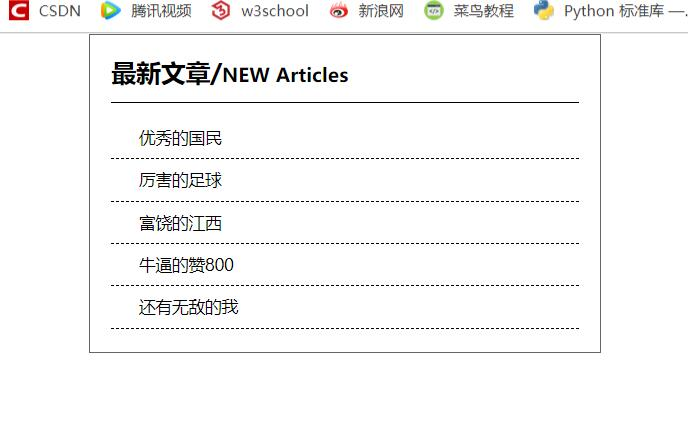

原文出处:本文由博客园博主心悦君兮君不知-睿提供。
原文连接:https://www.cnblogs.com/ruigege0000/p/11717356.html
原文连接:https://www.cnblogs.com/ruigege0000/p/11717356.html
一、还原字体和字号
1.利用fireworks切片以及文本添加的功能可以用来定位我们想要的文字是什么字体，行高又是多少，但其实很low，是我们人工挑选出来的。
2.注意点：在企业开发中，如果一个盒子中存储的是文字，那么一般情况下我们会以盒子左边的内边距为基准，不会以右边的内边距为基准，因为这个右边的内边距会有误差（每一行的最后一个字放不下了，只能换一行，导致原来的这一行右边距反而大了一些）
二、文字界面
1.做一个网页的顺序
（1）先清空所有的边距
body,div,dl,dt,dd,ul,ol,li,h1,h2,h3,h4,h5,h6,pre,code,form,fieldset,legend,input,textarea,p,blockquote,th,td{
margin:0;padding:0
}
（2）从外向内
（3）从上而下
<!DOCTYPE html>
<html lang="en">
<head>
<meta charset="UTF-8">
<title>Title</title>
<style>
body,div,dl,dt,dd,ul,ol,li,h1,h2,h3,h4,h5,h6,pre,code,form,fieldset,legend,input,textarea,p,blockquote,th,td {
margin: 0;
padding: 0
}
div{
margin:0 auto;
box-sizing: border-box;
width:372px;
height:232px;
border:1px solid #666;/*颜色中两位是一个颜色，应该有六位，但是如果两位一样则可以省略为一位，即这一行颜色全名为#666666*/
padding:15px;
}
h1{
font-family: "微软雅黑";
font-size:18px;
border-bottom:1px solid;
padding-bottom:10px;
}/*我们用div标签设置整体的布局，用span标签来设置里面细节的部分，如下设置NEW....*/
span{
font-size:14px;/*这里面还有优先级，小标签继承了大标签的特性，同时自己设置的属性又会覆盖原来继承的属性*/
}
ul{
list-style:None;/*这个我们复习了去掉行前面的小圆点*/
margin-top:10px;
}
ul li {
line-height:30px;/*复习了行高*/
border-bottom:1px dashed;
padding-left:20px;
font-size:12px;
font-family:"微软雅黑";
font-color:#242424;
}
</style>
</head>
<body>
<div>
<h1>最新文章/<span>NEW Articles</span></h1>
<ul><!--这里还复习了条目的表示方法及其快捷键：ul>li*5再加tab-->
<li>优秀的国民</li>
<li>厉害的足球</li>
<li>富饶的江西</li>
<li>牛逼的赞800</li>
<li>还有无敌的我</li>
</ul>
</div>
</body>
</html>
通过上面的例子，我们一步一步演示了如何将我们的网页实现出来，这种静态网页的布局按照上面的散布进行编写。
四、源码：
d119_edit_static_webpage_of_word.html
地址:
https://github.com/ruigege66/HTML_learning/blob/master/d119_edit_static_webpage_of_word.html
2.CSDN：https://blog.csdn.net/weixin_44630050（心悦君兮君不知-睿）
3.博客园：https://www.cnblogs.com/ruigege0000/
4.欢迎关注微信公众号：傅里叶变换，个人账号，仅用于技术交流，后台回复“礼包”获取Java大数据学习视频礼包